23. Working with Instruments and Effects
Every track in Live can host a number of devices. These devices can be of three different sorts:
- MIDI effects act upon MIDI signals and can only be placed in MIDI tracks.
- Audio effects act upon audio signals and can be placed in audio tracks, return tracks, and the Main track. They can also be added to MIDI tracks as long as they are placed after an instrument.
- Instruments receive MIDI and output audio; they can be placed in MIDI tracks.
To learn about a particular device and how to operate it, consult the Live Audio Effect Reference, Live MIDI Effect Reference, or Live Instrument Reference chapters.
To learn about creating and using custom groupings of instruments and effects, check out the Instrument, Drum and Effect Racks chapter.
Further information about track types in Live can be found in the Routing and I/O chapter, including information on using return tracks to distribute the effect of a single device amongst several tracks.
You can get hands-on with devices by assigning their parameters to MIDI or key remote control.
23.1 Device View
The Device View is where you insert, view, and adjust the devices for a selected track. You can double-click a track’s title bar to view its devices in the Device View, which appears at the bottom of Live’s window.

By default, either the Device View or the Clip View can be used at a time depending on whether a device or clip is in focus. If you want to tweak device parameters and edit notes or samples without switching between views, you can stack the Clip View above the Device View.

Use the toggles next to the Clip and Device View Selectors in the bottom-right corner of Live’s window to expand both views.

You can also use the keyboard shortcuts CtrlAlt3 (Win) / CmdOption3 (Mac) to show or hide the Clip View and CtrlAlt4 (Win) / CmdOption4 (Mac) to show or hide the Device View.
To save space in the Device View, a device can be collapsed by double-clicking its title bar or by choosing Fold from the title bar’s context menu.

23.2 Using Devices
Live’s devices can be accessed in the browser. The browser’s sidebar contains labels for built-in devices, Max for Live devices, and third-party plug-ins.

The easiest way to place a device in a track is to double-click it in the browser, which adds it to the selected track or creates a new track if one is not selected. Alternatively, select a destination track by clicking within it, then select a device or preset in the browser and press Enter to add it to the selected track.
You can also drag devices into tracks or drop areas in the Session and Arrangement Views, or into the Device View. Dragging a sample to the Device View of a MIDI track creates a Simpler instrument with this sample loaded.
If you want to use an external input signal to feed a track in Live, the track’s Arm button in the mixer must be activated in order to hear the input through the devices in the track’s device chain when using the default Auto monitoring setting. On MIDI tracks, this is normally activated automatically when inserting an instrument.
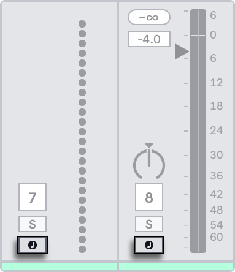
This is how you would play live instruments through effects on a track, for example, or use a MIDI keyboard’s input to play a track’s instrument. You can easily move from this setup into recording new clips for further use in a Set. If you have alternative monitoring preferences, please see the Monitoring section to learn how to configure these settings.
To add another device to the track, simply drag it there or double-click its name to append it to the device chain. Signals in a device chain always travel from left to right.
You can drop audio effects in at any point in an audio track’s device chain, keeping in mind that the order of effects determines the resulting sound. The same is true for a MIDI track’s device chain.
If you drop an instrument into a MIDI track’s device chain, be aware that signals following (to the right of) the instrument are audio signals, available only to audio effects. Signals preceding (to the left of) the instrument are MIDI signals, available only to MIDI effects. This means that it’s possible for a MIDI track’s device chain to hold all three types of devices: first MIDI effects, then an instrument, and finally audio effects.

To remove a device from the chain, click on its title bar and press your computer’s Backspace or Delete key, or select Delete from the Edit menu. To change the order of devices, drag a device by its title bar and drop it next to any of the other devices in the Device View. Devices can be moved to other tracks entirely by dragging them from the Device View into the Session or Arrangement Views.
Edit menu commands such as cut, copy, paste, and duplicate can be used on devices. Pasted devices are inserted in front of the selected device. You can paste at the end of a device chain by clicking in the space after the last device, or by using the right arrow key to move the selection there. Generally, devices can be placed, reordered, and deleted without interrupting the audio stream.
Devices in Live’s tracks have input and output level meters. These meters are helpful in finding problematic devices in the device chain: low or absent signals will be revealed by the level meters, and relevant device settings can then be adjusted, or the device can be turned off or removed.

Note that no clipping can occur between devices because there is practically unlimited headroom. Clipping can occur when an overly strong signal is sent to a physical output or written to a sample file.
After reading about using devices in Live, you might find it interesting to look into clip envelopes, which can automate or modulate individual device parameters on a per-clip basis.
23.2.1 Device Title Bar
The controls in a device’s title bar can be used to activate or deactivate the device, save and hot-swap presets, create default presets, and open the device’s context menu.
Certain title bar controls are only available for some devices, such as the scale awareness toggle for devices that can follow a clip’s scale, and the Learn toggle for the Chord device.
Devices are turned on or off using their Activator toggles.

Turning a device off is like temporarily deleting it: the signal remains unprocessed, and the device does not consume CPU cycles. Live devices generally have no impact on CPU usage unless they are active. For more information, please refer to the Managing the CPU Load section. The Freeze Track command discussed there is especially helpful when working with CPU-intensive devices.
Some devices have views that you can expand above the Device View, such as the Gain Stage and Modulation Matrix sections in Roar and the Frequency Display in EQ Eight.
Devices with this kind of view have an arrow toggle to the right of the Activator toggle. Use the toggle to show or hide the view.
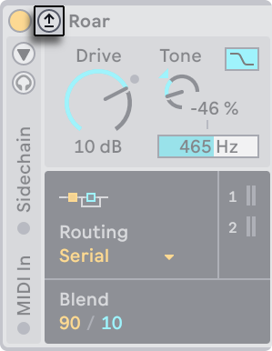
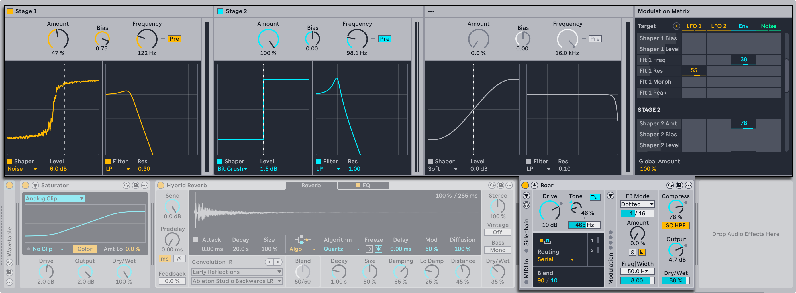
Some views can also be expanded within a device itself, for example, the LFO and Envelope Follower sections in Phaser-Flanger. This kind of view is indicated by a triangle icon in the device title bar.


A context menu is available for every device and contains general editing commands such as Cut, Copy, and Rename. Some commands are unique to a particular device, such as the Mono Sidechain option in Auto Filter.

You can right-click a device’s title bar or use the Show Options toggle to open the context menu.
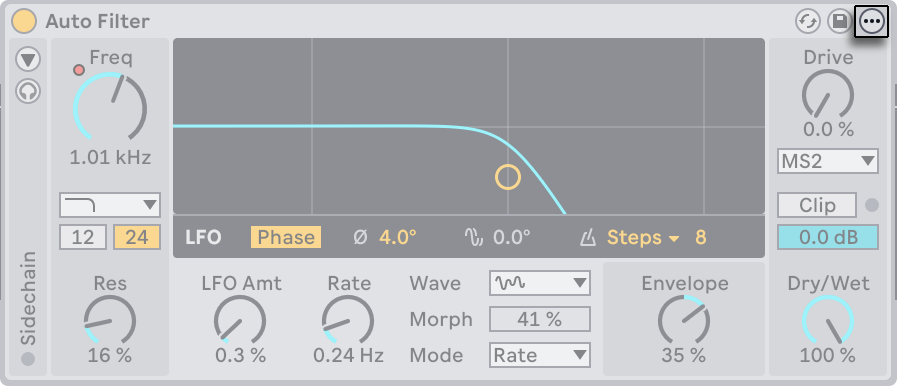
23.2.2 Device A/B Comparison
Every built-in Live device includes two device states, A and B, which can store separate parameter values. This lets you save and compare the changes you make when creating or editing presets. You can save an iteration of a preset that you don’t want to overwrite to one device state and continue experimenting on the other.
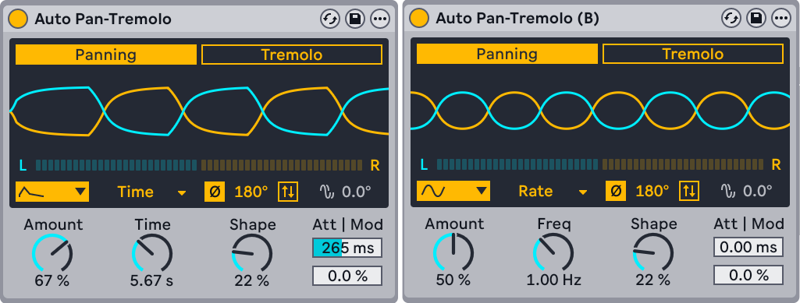
Using device states to compare parameter settings can also be useful for things like EQing and compression, where minor adjustments can make a noticeable difference. You can try out slight parameter variations to hear how they affect the resulting sound or check the changes against default values.
When a device is first loaded, its default parameter values are used for both A and B. Once you adjust a parameter, B retains the initial values, and any changes you make only apply to A.
To copy the current parameter values from the A device state to B, select the Compare: Copy A to B command from the Edit menu, the device’s context menu, or its Show Options toggle.

You can switch from the A device state to B using the Compare: Switch to B command or the P key. When the B device state is selected, a “(B)” appears next to the device’s name in the title bar.
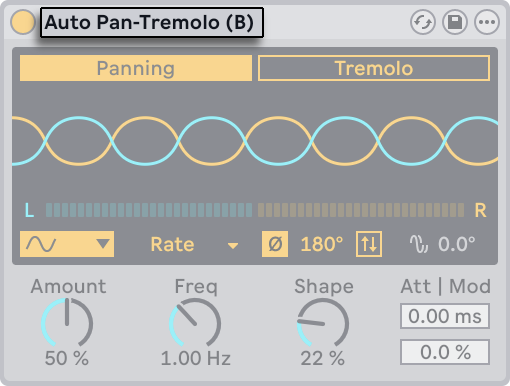
The Compare commands are available for both device states, so how you save parameter values to A and B is up to you. You could use one device state to keep the default values as a reference, or use both states to design completely different-sounding presets. Note that these commands are not available for Racks, Max for Live devices, or plug-ins.
Because A and B are unique device states, any parameter automation you create in one state is not shared with the other. This means if you automate a parameter in the A device state, that automation will be disabled when you switch to B and is not automatically re-enabled when you switch back to A.
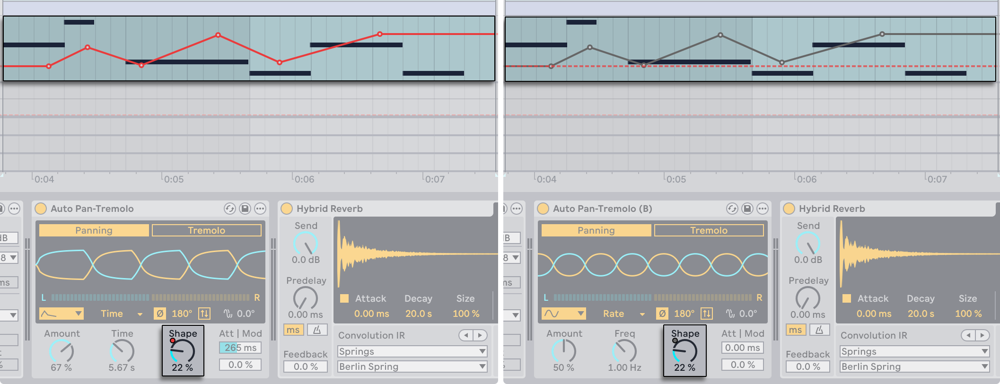
To reactivate any disabled parameter automation, use the Re-Enable Automation command in the parameter’s context menu when the device state you want to use is selected.
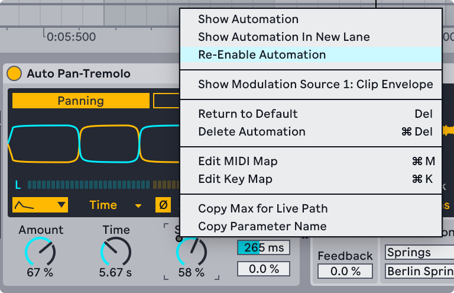
This command can be used from either device state. Keep in mind that since automation is specific to A and B, it will be disabled again each time you switch from one state to the other.
Only the parameter values from the selected device state are copied or duplicated. For example, if you copy a device while A is selected, the new device will use the parameter values from the original’s A device state for both A and B, even if the original’s B device state has other values.

Similarly, if you save a preset to your User Library, the parameter values from the selected device state are used for both A and B.
Note that device states can be accessed via the Live API with Max for Live.
23.2.3 Live Device Presets
Live devices can store and retrieve their parameter settings as presets. Each device appears in the content pane of the browser as a folder that can be opened to reveal its presets.

The folder represents the default preset for a device; this can be either the original factory settings or default settings you have saved. The presets within the folder have custom settings. Presets are included as part of the Core Library and Packs. You can also create and save your own presets.
You can browse and load presets quickly with the computer keyboard:
- Scroll up and down using the up and down arrow keys.
- Close and open device folders using the left and right arrow keys.
- Press Enter to load a preset onto a selected track.
You can also double-click a preset in the browser to load it onto a selected track, or drag and drop a preset from the browser onto a track’s title bar or device chain.
Note that it is generally recommended to load presets via the browser; however, it is also possible to drag Live-specific device file types (such as .adg, .adv, and .amxd) directly into a Live Set from the Explorer (Win) / Finder (Mac).
If you want to replace a preset on a track with a different one, you can drag and drop a new preset from the browser and place it over the existing preset in the track’s device chain.
23.2.4 Hot-Swapping Presets
Using Hot-Swap mode is a quick way to replace a preset on a track. In this mode, the preset on the track is linked to the browser so that you can audition and load different presets. To start hot-swapping, press Q or click the Hot-Swap Presets button in the device’s title bar.

If you press Q to enter Hot-Swap mode, the currently selected preset on the track will be made available for swapping. If no preset is selected, the first audio effect (on audio tracks) or the instrument (on MIDI tracks) will be swapped.
Once Hot-Swap mode is enabled, the preset is selected in the browser and its device folder is expanded. You can replace the preset with another one from the same folder or navigate to a different folder to swap in a preset for another device. Only presets of the same device type can be hot-swapped. For example, it is not possible to swap an audio effect for a MIDI effect.

Use the up and down arrow keys to navigate through the presets. Press Enter to load the selected preset or double-click the preset you want to load. If you want to use a device’s default settings, select the device’s parent folder and load that instead of one of its presets.
Note that you can automatically load presets in Hot-Swap mode by adding the -EnableHotSwapOnSelection entry to the Options.txt file. With this option, the existing preset is replaced as soon as a new one is selected in the browser.
Once you are done replacing presets, you can exit Hot-Swap mode with any of the following actions:
- Press the Q key.
- Press the Esc key.
- Click the X button in the Hot-Swap bar at the top of the browser’s content pane.
- Click the X button in the device’s title bar.
- Navigate from the browser to a different view.
23.2.4.1 Hot-Swapping Samples
In addition to replacing entire presets, you can swap out loaded samples in Drum Rack pads, Drum Sampler, Impulse, Sampler, and Simpler.
To do so, use the Hot-Swap Sample button that appears in the following locations:
- Drum Rack pads — At the bottom right of each pad.
- Drum Sampler — At the bottom right of the Waveform Display.
- Impulse — At the bottom right of each sample slot.
- Sampler — At the top left of the Zone Editor when it is expanded.
- Simpler — At the bottom right of the Sample Display.
Note that the button is only visible when you hover over the relevant area (except in Sampler, where it is always visible). For example, you can hover over the Waveform Display to access the button in Drum Sampler.
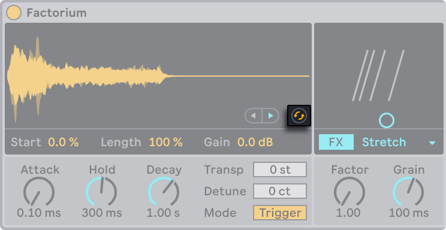
Clicking the button opens the folder where the sample is located in the browser. From there, you can replace the loaded sample with another one from the same folder or swap it with a sample from a different folder. Press Enter to load a selected sample or double-click the sample you want to load.

When you’re ready to stop swapping samples, you can exit Hot-Swap mode by:
- Clicking the Hot-Swap Sample button in the device.
- Clicking the X button in the Hot-Swap bar at the top of the browser’s content pane.
- Pressing the Esc key.
- Pressing the Q key.
- Navigating from the browser to a different view.
23.2.5 Saving Presets
You can create and save any number of your own presets in the browser’s User Library.

Click the Save Preset button to save a device’s current settings (including any custom info text) as a new preset. You will be redirected to the browser, where you can press Enter to use Live’s suggested name, or you can type one of your own. To cancel preset saving, press the Esc key. You can also save presets to specific folders in the Places section of the browser (such as your Current Project folder) by dragging from the title bar of the device and dropping into the browser location of your choice.
For detailed information on what can be done with the browser, check out the Working with the Browser chapter. For more on how to store Project-specific presets, see the Projects and Presets section in the Managing Files and Sets chapter.
23.2.6 Default Presets
Presets saved to the Defaults folders in your User Library will load in place of the generic device settings. There are also Defaults folders that allow you to:
- Customize how Live responds to various user actions, such as sample dropping, slicing, and converting audio to MIDI.
- Cause newly created MIDI and audio tracks to load with certain devices already in place, complete with custom parameter settings.
- Load VST and Audio Units plug-ins with a specific collection of parameters already configured in Live’s panel.

To save the current settings of a Live device as a default preset, open the context menu on the device’s header and select “Save as Default Preset.“ This works for all of Live’s instruments, MIDI effects, and audio effects (including the various types of Racks). If you have already saved a default preset for a particular device, Live will ask you before overwriting it.
To create a default configuration preset for a VST or Audio Unit plug-in:
- Load the selected plug-in to a track.
- From the plug-in’s Configure Mode, set up your desired collection of parameters.
- Open the context menu on the track header and select “Save as Default Configuration.”
If you have both VST and Audio Units versions of a particular plug-in installed, you can create separate default configuration presets for each type. Note that default presets for plug-ins do not save the settings of the configured parameters; only the parameter configuration within Live’s panel is saved.
To create default presets for MIDI and audio tracks:
- Load the device(s) you would like as default onto a track (or no devices, if you would like your default track to be empty).
- Adjust the device parameters as you like.
- Open the context menu on the track header and select “Save as Default Audio/MIDI Track.”
To specify how Live behaves when dragging a sample to a Drum Rack or the Device View of a MIDI track:
- Create an empty Simpler or Sampler.
- Adjust the parameters as you like.
- Drag the edited device to the “On Drum Rack“ or “On Device View“ folder, which can be found in the Defaults/Dropping Samples folders in your User Library. Drum Rack pad defaults can also be saved via a context menu option on a Drum Rack’s pad.
To adjust how Live behaves when slicing an audio file:
- Create an empty Drum Rack.
- Add an empty Simpler or Sampler to the Drum Rack to create a single chain.
- Add any additional MIDI or Audio Effects to this chain.
- Adjust parameters in any of the devices.
- Assign Macro Controls to any of the controls in the chain’s devices.
- Drag the entire Drum Rack to the Defaults/Slicing folder in your User Library.
You can create multiple slicing presets and choose between them in the Slicing Preset chooser in the slicing dialog.
To create default presets for converting Drums, Harmony, or Melody to MIDI:
- Create a MIDI track containing the instrument you would like to use as your default for a particular conversion type. Note that default presets for converting drums must contain a Drum Rack.
- Add any additional MIDI or Audio Effects to the track.
- Adjust parameters in any of the devices.
- If you’re using multiple devices, group them into a Rack.
- Drag the entire Rack to the appropriate folder in Defaults/Audio to MIDI in your User Library.
In addition to these program-wide default presets, you can also create default presets that are specific to only one Project. This can be useful if, for example, you’re using specialized device or track configurations for a particular Set, and would like to create variations of the Set which will also have access to these presets, but without overwriting the more generalized default presets you use for your other types of work. To create Project-specific default presets:
- Recreate the Defaults folder and any desired subfolders within the Project folder.
- Depending on which types of Project-specific defaults you’d like to work with, adjust the corresponding device parameters, track settings, etc.
- Save the device or track to the appropriate folder in your Project-specific Defaults folder.
Now, whenever you’ve loaded a Set from this Project, any default presets that you’ve saved into these Project folders will be used instead of those found in the User Library. Note that the context menu options for saving default presets will save them to your main User Library, and so cannot be used to save Project-specific defaults.
23.3 Using Plug-Ins
The collection of devices that you can use in Live can be extended with plug-ins. Live supports Steinberg Media’s VST plug-in format, as well as the Audio Units (AU) plug-in format (macOS only), specifically:
- VST2
- VST3
- Audio Units 2
- Audio Units 3 (Live 11.2 and later)
Working with VST and Audio Units plug-ins is very much like working with Live devices. VST and AU instruments can only be placed in Live MIDI tracks and, like Live instruments, they will receive MIDI and output audio signals. Plug-in audio effects can only be placed in audio tracks or following instruments. Please see the previous section, Using the Live Devices, for details.
To skip plug-in scanning when Live is launched, hold the Alt (Win) / Option (Mac) modifier when opening the program until the splash screen closes. This can be helpful when troubleshooting crashes to see if any plug-ins are causing the problem.

Audio Units and VST plug-ins are browsed and imported using the browser’s Plug-Ins label. Plug-in instruments can be differentiated from plug-in effects in the browser, as they appear with a keyboard icon.
Note that plug-in presets are only available in the browser for Audio Units plug-ins. In some instances, factory presets for Audio Units will only appear in the browser once the device has been placed in a track and its Hot-Swap button activated.
Note: The first time you start Live, no plug-ins will appear in the Plug-Ins label as you must first “activate“ your plug-in sources. Activating your plug-in sources tells Live which plug-ins you want to use and where they are located on your computer. Information on activating (and deactivating) plug-in sources can be found later in this chapter, in the sections on the VST Plug-In folder and Audio Units Plug-Ins.
Note for “Intel® Mac“ users: Intel® Mac computers cannot natively run VST or AU plug-ins that have been written for the PowerPC platform. Only plug-ins of type Universal or Intel® can be used in Live.
If you install/uninstall a plug-in while the program is running, Live will not detect your changes or implement them in the browser until the next time you start the program. Use the Rescan button in the Plug-Ins Settings to rescan your plug-ins while Live is running, so that newly installed devices become immediately available in the browser.
You can also rescan if you believe that your plug-in database has somehow become corrupted. Holding down the Alt (Win) / Option (Mac) modifier while pressing Rescan will delete your plug-in database altogether and run a clean scan of your plug-ins.
23.3.1 Plug-Ins in the Device View

Once a plug-in is dragged from the browser into a track, it will show up in the Device View. For plug-ins with up to 64 modifiable parameters, a Live panel will represent all of the parameters as horizontal sliders. Plug-ins that contain more than 64 parameters will open with an empty panel, which you can then configure to show the parameters you want to access. The plug-in’s original interface can be opened in a separate window.
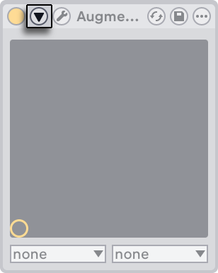
You can view or hide the plug-in’s parameters by toggling the  button in the plug-in’s title bar.
button in the plug-in’s title bar.
The X-Y control field can be used to control two plug-in parameters at once and is therefore especially well-suited for live control. To assign any two plug-in parameters to the Live panel X-Y field, use the drop-down menus directly beneath it.
23.3.1.1 Showing Plug-In Panels in Separate Windows

The Show/Hide Plug-In Window button opens a floating window that shows the original VST or Audio Units plug-in panel. Changing parameters on the floating window has the same effect as changing them in the Live panel, and vice versa.
There are a few important Plug-Ins Settings for working with plug-in windows:
- If activated, the Auto-Open Plug-In Windows option assures that plug-in windows open automatically when plug-ins are loaded into tracks from the browser.
- If the Multiple Plug-In Windows option in the Plug-In Settings is activated, you can open any number of plug-in windows at once. Even with this option off, you can hold down the Ctrl (Win) / Cmd (Mac) modifier when opening a new plug-in window to keep the previous window(s) from closing.
- Using the Auto-Hide Plug-In Windows option, you can choose to have Live display only those plug-in windows belonging to the track that is currently selected.
You can use the View menu’s Show/Hide Plug-In Windows command or the CtrlAltP (Win) / CmdOptionP (Mac) shortcut to hide and show open plug-in windows. Note that the shortcut only works if the plug-in windows have already been opened manually first or if the Auto-Open Plug-In Windows option is enabled in Live’s Settings. An open plug-in window shows the name of the track to which the plug-in belongs in the title bar of the plug-in window.
23.3.1.2 Plug-In Configure Mode

Configure Mode allows you to customize Live’s panel to show only the plug-in parameters that you need to access. To do this:
- Enter Configure Mode by pressing the “Configure“ button in the device’s header.
- Click on a parameter in the plug-in window to add it to Live’s panel. For some plug-ins, it may be necessary to actually change the parameter’s value. Additionally, certain plug-ins do not “publish“ all of their parameters to Live. These parameters cannot be added to Live’s panel.
While in Configure Mode, parameters in Live’s panel can be reordered or moved by dragging and dropping them to new locations. Parameters can be deleted by pressing the Delete key. If you try to delete a parameter that has existing automation data, clip envelopes, or MIDI, key or Macro mappings, Live will warn you before proceeding.
The parameters that you assign are unique for each instance of a given plug-in in your Set, and are saved with the Set. If you would like to save a setup using a particular collection of parameters, you can create a Rack containing the configured plug-in. Racks can then be saved to your User Library and loaded into other Sets. You can also save a particular parameter configuration as a default preset.
Certain plug-ins do not have their own windows, and instead only show their parameters in Live’s panel. For these plug-ins, it is not possible to delete parameters when in Configure Mode (although they can still be moved and reordered).
There are several ways to add plug-in parameters to Live’s panel without entering Configure Mode:
- Adjusting a parameter in the plug-in’s floating window creates temporary entries for that parameter in the clip envelope and automation choosers, as well as the choosers in the panel’s X-Y field. These entries are removed when you adjust another parameter. To make the entry permanent (thus adding it to Live’s panel), either edit the parameter’s automation or clip envelope, select another parameter in the automation or clip envelope choosers, or select the temporary parameter in one of the X-Y field’s choosers.
- When a parameter is changed on a plug-in’s floating window during recording, automation data is recorded automatically. When recording is stopped, the automated parameters are automatically added to Live’s panels for any plug-ins that were adjusted.
- When in MIDI, key or Macro mapping mode, adjusting any parameter in the plug-in’s window will create it in Live’s panel. The new panel entry will be automatically selected, allowing you to map it immediately.
Once a plug-in is placed in a track and you have (optionally) configured its parameters in Live’s panel, you can use it just like a Live device:
- You can map MIDI controller messages to all of the parameters in Live’s panel.
- You can drag or copy the device to different locations in the device chain or to other tracks, according to the rules of audio effects and instruments.
- You can automate or modulate its continuous parameters with clip envelopes.
- You can use the multiple I/O features of some plug-ins by assigning them as sources or targets in the routing setup of tracks. See the Routing and I/O chapter for details.
- You can create custom info text for the plug-in.
23.3.2 Sidechain Parameters
Normally, the signal being processed and the input source that triggers the plug-in device are the same signal. But by using sidechaining, it is possible to apply processing to a signal based on the level of another signal. In plug-in devices that support sidechaining, you can access the sidechain parameters on the left side of the device.
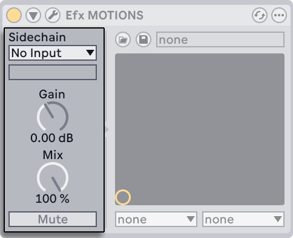
The choosers allow you to select any of Live’s internal routing points. This causes the selected source to act as the device’s trigger, instead of the signal that is actually being processed.
The Gain knob adjusts the level of the external sidechain’s input, while the Mix knob allows you to use a combination of sidechain and original signal as the trigger. With Mix at 100%, the device is triggered entirely by the sidechain source. At 0%, the sidechain is effectively bypassed. Note that increasing the gain does not increase the volume of the source signal in the mix. The sidechain audio is only a trigger for the device and is never actually heard.
The Mute button allows you to listen to only the plug-in device’s output, bypassing the sidechain source’s input.
23.4 VST Plug-Ins
23.4.1 The VST Plug-In Folder
When you start Live for the first time, you will need to activate your VST plug-in sources before working with VST plug-ins. Depending on your computer platform, you may also have to tell Live about the location of the VST plug-in folder containing the devices you want to use. In order to set up your VST sources, press the Activate button in the browser’s Plug-Ins panel, or open the Plug-Ins Settings by pressing Ctrl, (Win) / Cmd, (Mac). There you will find the Plug-In Sources section.

For Windows, proceed as follows:
- Use the VST Plug-In Custom Folder entry to tell Live about the location of your VST plug-ins: Click the Browse button to open a folder-search dialog for locating and selecting the appropriate folder.
- Once you have selected a VST Custom Folder and Live has scanned it, the path will be displayed. Note that on Windows, Live may have found a path in the registry without the need for browsing.
- Make sure that the Use VST Plug-In Custom Folder option is set to “On,“ so that your selected folder is an active source for VST plug-ins in Live. Note that you can choose not to use your VST plug-ins in Live by turning off the Use VST Plug-In Custom Folder option.

Set up your VST plug-ins under macOS by doing the following:
- Your VST plug-ins will normally be installed in the following folder in your home and local directories: /Library/Audio/Plug-Ins/VST. You can turn Live’s use of these plug-ins on or off with the Use VST plug-ins in System Folders option.
- You may have an alternative folder in which you store your VST plug-ins (perhaps those that you use only with Live). You can use VST plug-ins in this folder in addition to, or instead of, those in the System folders. To tell Live about the location of this folder, click the Browse button next to the VST Plug-In Custom Folder entry to open a folder-search dialog for locating and selecting the appropriate folder.
- Note that you can turn off your VST plug-ins in this folder using the Use VST Plug-In Custom folder option.
Once you have configured your Plug-Ins Settings, the browser will display all plug-ins it finds in the selected VST plug-in folder(s) as well as any sub-folders.
It is also possible to use VST plug-ins stored in different folders on your computer. To do this, create a macOS or Windows alias of the folder where additional VST plug-ins are stored, and then place the alias in the VST Plug-In Custom folder (or in the VST Plug-In System folder on macOS) selected in Live’s Plug-Ins Settings. The alias can point to a different partition or hard drive on your computer. Live will scan the set VST plug-in folder as well as any alias folders contained therein.
Some VST plug-ins contain errors or are incompatible with Live. During the scanning process, these may cause the program to crash. When you re-launch Live, a dialog will appear to inform you about which plug-in caused the problem. Depending on what Live detects about the plug-in, you may be given the choice between performing another scan or making the problematic plug-in unavailable. If you choose to rescan and they crash the program a second time, Live will automatically make them unavailable, meaning that they will not appear in the browser and will not be rescanned again until they are reinstalled.
23.4.2 VST Presets and Banks
Every VST plug-in instance “owns“ a bank of presets. A preset is meant to contain one complete set of values for the plug-in’s controls.
To select a preset from the plug-in’s bank, use the chooser below the title bar. The number of presets per bank is fixed. You are always working “in“ the currently selected preset, that is, all changes to the plug-in’s controls become part of the selected preset.

Note that VST presets are different from Live device presets: Whereas the presets for a Live device are shared amongst all instances and Live Sets, the VST presets “belong“ to this specific instance of the VST plug-in.
To rename the current preset, select the VST’s Device Title Bar and execute the Edit menu’s Rename Plug-In Preset command. Then type in a new preset name and confirm by pressing Enter.
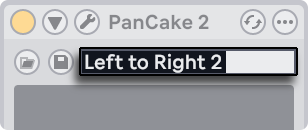
VST presets and banks can be imported from files. Clicking a VST’s Load Preset or Bank button brings up a standard file-open dialog for locating the desired file.

Windows only: Please select from the File Type filter in the Windows dialog whether you want to locate VST Presets (VST Program Files) or VST Banks (VST Bank Files).
To save the currently selected preset as a file, click the VST Save Preset or Bank button to bring up a standard file-save dialog; select “VST Preset“ from the Format menu (Mac)/from the File Type menu (Windows); select a folder and name. For saving the entire bank as a file, proceed likewise but choose “VST Bank“ as a file type/format.
23.5 Audio Units Plug-Ins
Audio Units plug-ins are only available in macOS. In most respects, they operate just like VST plug-ins.
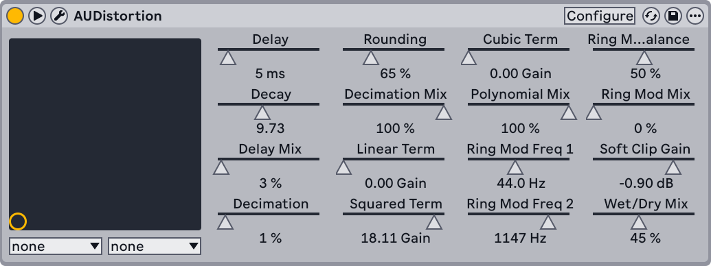
The first time you open Live, Audio Units plug-ins will not appear in the browser. In order to activate your Audio Units as a plug-in source, please press the Activate button in the browser’s Plug-Ins label, or go to the Plug-Ins Settings by pressing Ctrl, (Win) / Cmd, (Mac). There you will find the Plug-In Sources section. Turning on the Use Audio Units option activates Audio Units plug-ins so that they appear in Live’s browser.
Note that you can always turn this option off later if you decide not to use Audio Units.

Audio Units plug-ins sometimes have a feature that allows choosing between different modes for the device. You might be able to choose, for example, between different levels of quality in the rendering of a reverb. Choosers for these device modes can only be accessed through the original plug-in panel, which is opened using the Show/Hide Plug-In Window button.
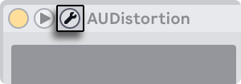
Audio Units have presets that function just like those for the Live effects. However, some AU presets cannot be dragged to different locations in the browser, as they are read-only.
Audio Units presets have an .au preset extension and are stored in the following directory according to their manufacturer’s name:
(Home)/Library/Audio/Presets/(Manufacturer Name)/(Plug-in Name)
23.6 Device Delay Compensation
Live automatically compensates for delays caused by Live and plug-in instruments and effects, including those on the return tracks. These delays can arise from the time taken by devices to process an input signal and output a result. The compensation algorithm keeps Live’s tracks in sync while minimizing delay between the player’s actions and the audible result.
Device delay compensation is on by default and does not normally have to be adjusted in any way. To manually turn latency compensation on (or off), use the Delay Compensation option in the Options menu.
When Delay Compensation is on, the Reduced Latency When Monitoring option is available in the Options menu. This option toggles latency compensation on and off for tracks which have input monitoring on. When enabled, input-monitored tracks will have the lowest possible latency, but may be out of sync with some other tracks in your Set, such as Return tracks, which are still delay compensated. When disabled, all tracks will be in sync, but input-monitored tracks may have higher latency.
Note that tempo-synced effects and other devices that get timing information from Live’s internal clock may sound out of sync if they are placed in a device chain after devices which cause delay.
Unusually high individual track delays or reported latencies from plug-ins may cause noticeable sluggishness in the software. If you are having latency-related difficulties while recording and playing back instruments, you may want to try turning off device delay compensation; however, this is not normally recommended. You may also find that adjusting the individual track delays is useful in these cases, but please note that the Track Delay controls are unavailable when device delay compensation is deactivated.
Note that device delay compensation can, depending on the number of tracks and devices in use, increase the CPU load.